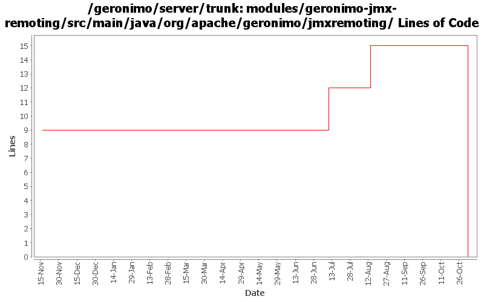

[root]/modules/geronimo-jmx-remoting/src/main/java/org/apache/geronimo/jmxremoting

| Author | Changes | Lines of Code | Lines per Change |
|---|---|---|---|
| Totals | 14 (100.0%) | 16 (100.0%) | 1.1 |
| djencks | 1 (7.1%) | 8 (50.0%) | 8.0 |
| gdamour | 2 (14.3%) | 7 (43.8%) | 3.5 |
| gawor | 1 (7.1%) | 1 (6.3%) | 1.0 |
| prasad | 4 (28.6%) | 0 (0.0%) | 0.0 |
| kevan | 6 (42.9%) | 0 (0.0%) | 0.0 |
GERONIMO-3565. Modules distributed amongst framework/modules and plugins
0 lines of code changed in 4 files:
improved jmx security unit tests
1 lines of code changed in 1 file:
GERONIMO-3407 stop using SubjectRegistrationLoginModule
8 lines of code changed in 1 file:
* Add a Cluster GBean such that we can implement cluster aware services, for
instance a cluster aware deployer;
* When a clustered Web-application is deployed, we now deploy it to a Cluster
by specifying its name. The former mechanism was to deploy it to a
DispatcherHolder;
* Add Node.getJMXConnector such that clients can get a JMXConnector connected
to the target Node instance. Host and port connection details of this
JMXConnector are retrieved via the clustered service proxying/invocation of
WADI; and
* Use a configuration substitution mechanism to simplify the configuration of
node names.
7 lines of code changed in 2 files:
GERONIMO-2537 Update the src headers in server/trunk/modules to be compliant with the new ASF src header and copyright policy (http://www.apache.org/legal/src-headers.html). I also did some cleanup of the src headers and tried to make them all a consistent format
0 lines of code changed in 6 files: